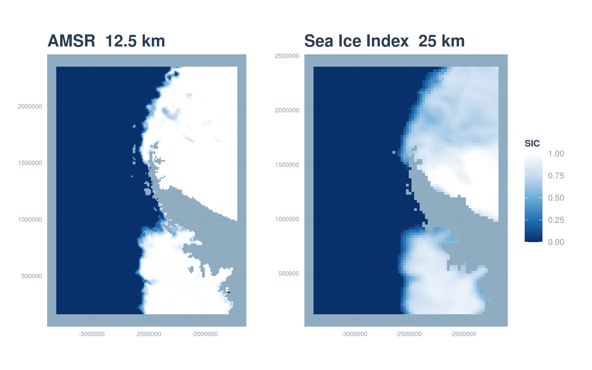

source(here::here("R", "setup.R"))
paths <- sih_paths()
paths$mode[1] "sample"This chapter gets your environment ready and frames the harmonization problem concretely, then shows you the resolution gap that motivates everything else with a first figure built from the bundled sample.
The western Antarctic Peninsula is one of the fastest-changing marine environments on Earth, and sea ice is the variable that ties much of that change together. To study it we lean on two satellite passive microwave products, and they pull in opposite directions.
The first is the NSIDC Sea Ice Index, a 25 km daily record that begins in 1979 and continues to the present (Fetterer et al. 2017). It is long, which is what you want for detecting multi-decadal change, but coarse, so it smears the narrow shelf and the island-dotted coastline of the Peninsula into a handful of large cells. The second is the Advanced Microwave Scanning Radiometer product, distributed by NSIDC as AU_SI12, a 12.5 km daily record that resolves the coast far better but only begins in the 2000s (Markus et al. 2018). You can have spatial detail or temporal depth, but no single product gives you both.
Harmonization removes the choice. We learn how the coarse product maps onto the fine one during the years they overlap, then apply that mapping to the entire coarse record, producing one continuous 12.5 km dataset that reaches back to 1979.
You need R version 4.2 or newer and a handful of packages: terra and sf for the spatial work, nnet for the neural network, dplyr, tidyr, lubridate, and scales for data handling, ggplot2 and patchwork for figures, and here for project-relative paths. If you want to render this book yourself you also need Quarto. You do not need an NSIDC Earthdata account to follow along on the bundled sample; you need one only when you move to the full download in Chapter 2.
Clone the repository and enter it:
git clone https://github.com/M-Fox-Wethington/Sea-Ice-Dataset-Harmonization-Tutorial.git
cd Sea-Ice-Dataset-Harmonization-TutorialThe project pins its package versions with renv, so the most reliable way to reproduce the environment is to restore that lockfile:
# install.packages("renv")
renv::restore()If you would rather not use renv, install the packages directly:
install.packages(c("terra", "sf", "nnet", "dplyr", "tidyr",
"lubridate", "scales", "ggplot2", "patchwork", "here"))If you prefer a fully self-contained environment, including the system libraries that terra and sf depend on, build the bundled container instead. The Dockerfile starts from the Rocker geospatial image, so GDAL, GEOS, PROJ, and HDF5 are already present:
docker build -t seaice-harmonization .
docker run --rm -p 8787:8787 seaice-harmonizationEvery chapter runs against one of two data sources, chosen by the SIH_MODE environment variable. The default is sample, which points at the small clipped dataset committed under data/sample/ and runs in minutes with no account. Setting SIH_MODE=full points the same code at your own download (see Chapter 2), with its location given by SIH_DATA_ROOT. The switch lives in R/paths.R, and you resolve the active paths like this:
source(here::here("R", "setup.R"))
paths <- sih_paths()
paths$mode[1] "sample"Load the bundled sample for both products and compare their shapes. The two stacks hold the same 91 days of 2013, but at different resolutions.
amsr <- load_sic_stack(paths$amsr_dir)
nsidc <- load_sic_stack(paths$nsidc_dir)
c(amsr_layers = terra::nlyr(amsr), nsidc_layers = terra::nlyr(nsidc)) amsr_layers nsidc_layers
91 91 data.frame(
product = c("AMSR (AU_SI12)", "Sea Ice Index"),
resolution = c(terra::res(amsr)[1], terra::res(nsidc)[1]),
ncell = c(terra::ncell(amsr), terra::ncell(nsidc)),
crs = c(terra::crs(amsr, describe = TRUE)$code,
terra::crs(nsidc, describe = TRUE)$code)
) product resolution ncell crs
1 AMSR (AU_SI12) 12500 22400 3976
2 Sea Ice Index 25000 6188 3976Both products are already on the same projection, the WGS 84 NSIDC Sea Ice polar stereographic grid (EPSG:3976), so there is no reprojection to do between them. The only spatial difference is the cell size, and you can see it plainly by drawing the same day from each product.
library(patchwork)
day <- 40 # a mid-winter layer
p_amsr <- ggplot(rast_to_df(amsr[[day]], "sic"), aes(x, y, fill = sic)) +
geom_raster() + scale_fill_sic() + coord_equal() +
labs(title = "AMSR 12.5 km", x = NULL, y = NULL) + theme_bri_map()
p_nsidc <- ggplot(rast_to_df(nsidc[[day]], "sic"), aes(x, y, fill = sic)) +
geom_raster() + scale_fill_sic() + coord_equal() +
labs(title = "Sea Ice Index 25 km", x = NULL, y = NULL) + theme_bri_map()
p_amsr + p_nsidc + plot_layout(guides = "collect")
That difference in grain is the whole reason to harmonize rather than simply splice the records together. We want the long Sea Ice Index history, but expressed at the sharper AMSR resolution.
Chapter 2 walks through downloading the full products from NSIDC. Chapter 3 converts the native files to analysis-ready GeoTIFFs and explains the value coding. Chapter 4 builds the land mask. Chapter 5 reconciles the two products onto a common grid and pairs them pixel by pixel. Chapter 6 fits and tunes the neural network and compares it against simpler baselines. Chapter 7 deploys the model across the full record and validates it. Chapter 8 computes sea-ice metrics and a long-term trend from the harmonized dataset. Chapter 9 covers running at full scale and adapting the method to other products and regions.